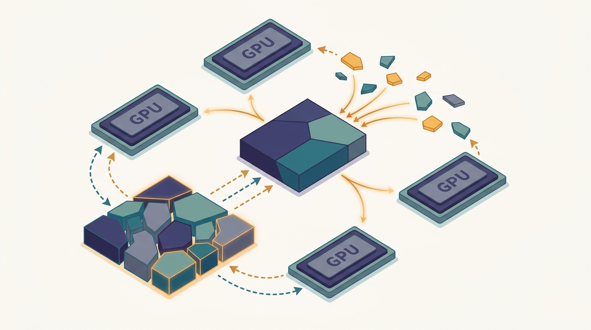

"I kept a full copy of the optimizer state, just like all 511 of my colleagues. Between us we stored the same numbers 512 times, and then we wondered why we ran out of memory."
A Data-Parallel Worker, Hoarding Redundantly

Plain data parallelism is simple because every worker holds a full copy of the model, its gradients, and its optimizer state; that same redundancy is exactly why it runs out of memory on large models. The Zero Redundancy Optimizer (ZeRO) keeps the programming model of data parallelism but deletes the redundancy: each worker stores only a $1/K$ slice of the model state and re-assembles the full tensors on demand, just before they are needed, then frees them again. Three stages remove the redundancy in increasing measure: Stage 1 shards the optimizer state, Stage 2 also shards the gradients, Stage 3 also shards the parameters. Per-device memory falls roughly like $1/K$, so a model that could never fit on one accelerator suddenly fits across many, and the price is extra communication that turns out to be a familiar pair of collectives. This section shows what is sharded, what it costs to move, and why the trade-off is worth paying.
The previous section split a single model across devices by cutting it into tensor and pipeline stages, which changes the structure of the computation and demands that the model be carved up by hand. That works, but it gives up the great virtue of data parallelism from Chapter 15: every worker runs the identical program on its own shard of the data, and the framework needs to know nothing about the model's internal structure. Sharded data parallelism asks whether we can keep that virtue and still fit a model far larger than one device, by attacking memory rather than computation. The answer is yes, and the idea is almost embarrassingly simple once stated: stop storing the same numbers on every worker.
Recall the memory bill from training. For a model with $\Phi$ parameters trained with mixed-precision Adam, each worker in plain data parallelism holds an fp16 copy of the parameters ($2\Phi$ bytes), an fp16 copy of the gradients ($2\Phi$ bytes), and the optimizer state, which for Adam is an fp32 master copy of the weights plus the first and second moments ($4\Phi + 4\Phi + 4\Phi = 12\Phi$ bytes). That is $16\Phi$ bytes per worker, and the $12\Phi$ of optimizer state dominates. With $K$ workers, the cluster stores the same $16\Phi$ bytes $K$ times over. Every worker needs its own slice at any given instant, but no worker needs the whole thing all the time. ZeRO exploits exactly that gap.
1. The Redundancy in Plain Data Parallelism Beginner
In data-parallel training each of the $K$ workers processes a different micro-batch, computes a local gradient, and the workers combine those gradients with an all-reduce so that all of them apply the identical update and stay in lockstep. Because they stay in lockstep, every worker's parameters are identical, every worker's averaged gradient is identical, and after the optimizer step every worker's optimizer state is identical too. The workers are running $K$ exact replicas of the same state. That replication is what makes the method trivial to reason about, and it is pure waste: of the $16\Phi$ bytes a worker stores, only $16\Phi / K$ of it is information unique to that worker. The rest is a copy of what its neighbors already hold.
The Zero Redundancy Optimizer, introduced by Rajbhandari and colleagues at Microsoft for the DeepSpeed library, observes that we can partition this replicated state across the workers so that worker $k$ is the sole owner of slice $k$, and reconstruct any full tensor only at the moment it is required for computation. The partition is purely a memory-placement decision; the arithmetic each worker performs on its own data is unchanged, which is why ZeRO preserves the data-parallel programming model exactly. The cost is that reconstructing a tensor that lives in pieces across the cluster requires moving those pieces, and freeing it afterward means moving them again next time. The whole design is a trade of memory for communication, and ZeRO offers it in three stages of increasing aggressiveness.
Plain data parallelism keeps $K$ identical copies of the parameters, gradients, and optimizer state because that is convenient, not because it is necessary. At any single instant a worker needs only the slice of state relevant to the tensor it is currently touching. ZeRO turns "store everything everywhere, always" into "store your $1/K$ slice, and borrow the rest from your neighbors exactly when you need it." Memory drops toward $16\Phi / K$ per device; what you give back is the network traffic of borrowing.
2. Three Stages: Sharding Optimizer State, Gradients, Parameters Intermediate
The three model-state components differ in how much memory they occupy and how often they are touched, so ZeRO shards them in order of payoff. Let $K$ be the number of data-parallel workers and write the per-device model-state memory at each stage. Plain data parallelism stores
$$M_{\text{DP}} = \underbrace{2\Phi}_{\text{params}} + \underbrace{2\Phi}_{\text{grads}} + \underbrace{12\Phi}_{\text{Adam state}} = 16\Phi \text{ bytes}.$$Stage 1 (ZeRO-1) shards the optimizer state, the largest term, leaving the parameters and gradients replicated:
$$M_1 = 2\Phi + 2\Phi + \frac{12\Phi}{K} = 4\Phi + \frac{12\Phi}{K}.$$Stage 2 (ZeRO-2) additionally shards the gradients, since each worker only needs the gradient slice corresponding to the optimizer slice it owns:
$$M_2 = 2\Phi + \frac{2\Phi}{K} + \frac{12\Phi}{K} = 2\Phi + \frac{14\Phi}{K}.$$Stage 3 (ZeRO-3) finally shards the parameters themselves, so that no full tensor is resident anywhere except transiently during its own computation:
$$M_3 = \frac{2\Phi}{K} + \frac{2\Phi}{K} + \frac{12\Phi}{K} = \frac{16\Phi}{K}.$$The pattern is clean: each stage moves one more term from "replicated" to "divided by $K$." Stage 3 divides everything, so per-device memory falls like $1/K$ without bound, which is what makes trillion-parameter training possible on accelerators that individually hold only tens of gigabytes. Figure 16.4.1 shows the same progression as a picture: shaded blocks owned by one worker, faint blocks owned by neighbors.
3. The Communication: All-Gather to Borrow, Reduce-Scatter to Return Intermediate
Sharding the parameters means no worker holds a full layer's weights at rest, yet computing that layer's output needs all of its weights. ZeRO-3 resolves this with a just-in-time dance. Right before a layer runs in the forward pass, the workers all-gather its parameter shards so that every worker briefly holds the complete layer; the layer computes; then each worker frees the parts it does not own, dropping back to its $1/K$ slice. The backward pass all-gathers the same parameters again to compute gradients, then the freshly computed gradients are combined and partitioned in one step with a reduce-scatter, so that worker $k$ ends up holding exactly the summed gradient slice for the parameters it owns and can apply its slice of the optimizer step locally.
This is the moment the thesis thread of the whole book reappears. In Chapter 15 plain data parallelism combined gradients with a single all-reduce. A ring all-reduce is internally exactly a reduce-scatter followed by an all-gather, as built in Section 4.5. ZeRO does not invent a new collective; it splits the all-reduce back into its two halves and uses each half where the sharded layout needs it: reduce-scatter to land each gradient slice on its owner, all-gather to reconstruct parameters on demand. The same primitive from Section 1.3 of Chapter 1, scaled out one more way.
The gradient all-reduce of data-parallel training is not a single irreducible operation; it is a reduce-scatter (sum partial gradients, leaving each worker one slice) followed by an all-gather (broadcast the slices back into a full vector). ZeRO keeps the reduce-scatter half to deposit each gradient slice on its owner, and re-spends the all-gather half on the parameters instead, gathering them just before they are used. The identity reduce-scatter + all-gather = all-reduce from Section 4.5 is the hinge that lets sharded data parallelism cost the same communication as plain data parallelism for Stages 1 and 2, and only $1.5\times$ for Stage 3. The next section shows PyTorch FSDP building its API directly on this pair.
The communication bill follows directly. Stages 1 and 2 still move a reduce-scatter plus an all-gather worth of gradient data per step, which is the same $2\Phi$ of traffic as a plain all-reduce, so they shrink memory for free in communication terms. Stage 3 adds the parameter all-gathers: one in the forward pass and one in the backward pass, each moving $\Phi$, on top of the gradient reduce-scatter of $\Phi$. That is $3\Phi$ versus the $2\Phi$ of plain data parallelism, a $1.5\times$ increase. The trade is summarized in Table 16.4.1 and made concrete by the demo that follows.
| Method | Per-device memory | Sharded | Comm. per step |
|---|---|---|---|
| Plain DP | $16\Phi$ | nothing | $2\Phi$ (all-reduce) |
| ZeRO-1 | $4\Phi + 12\Phi/K$ | optimizer state | $2\Phi$ |
| ZeRO-2 | $2\Phi + 14\Phi/K$ | + gradients | $2\Phi$ |
| ZeRO-3 | $16\Phi/K$ | + parameters | $3\Phi$ |
4. Watching Memory Fall Like 1/K Intermediate
The accounting above is easy to state and easy to get wrong, so the code below computes it directly. It models a 1.5-billion-parameter network (GPT-2 XL scale) trained with mixed-precision Adam and reports the per-device model-state memory for plain data parallelism and ZeRO Stages 1 through 3 as the worker count $K$ grows, then the communication volume each method moves per step. There are no deep-learning libraries here, only the byte arithmetic of Section 2 and Section 3, so the numbers are exactly the formulas made visible.
import numpy as np
P = 1_500_000_000 # 1.5B parameters (GPT-2 XL scale)
b_fp16_param = 2 # fp16 parameter copy, bytes/param
b_fp16_grad = 2 # fp16 gradient
b_opt = 12 # Adam fp32 master + m + v = 4+4+4 bytes/param
GB = 1024**3
def per_device_gb(K, stage):
param = b_fp16_param * P
grad = b_fp16_grad * P
opt = b_opt * P
if stage >= 1: opt /= K # ZeRO-1: shard optimizer state
if stage >= 2: grad /= K # ZeRO-2: also shard gradients
if stage >= 3: param /= K # ZeRO-3: also shard parameters
return (param + grad + opt) / GB
print("Per-device model-state memory (GB), P = 1.5e9 params, Adam mixed precision")
print(f"{'K':>4} | {'plain DP':>9} | {'ZeRO-1':>8} | {'ZeRO-2':>8} | {'ZeRO-3':>8}")
print("-" * 52)
for K in (1, 2, 8, 32, 128, 512):
row = [per_device_gb(K, s) for s in (0, 1, 2, 3)]
print(f"{K:>4} | {row[0]:>9.2f} | {row[1]:>8.2f} | {row[2]:>8.2f} | {row[3]:>8.2f}")
# Communication per step in units of Phi (one fp16 copy of all params).
# Plain DP / ZeRO-1 / ZeRO-2: gradient all-reduce = reduce-scatter + all-gather = 2*Phi.
# ZeRO-3: forward all-gather (Phi) + backward all-gather (Phi) + grad reduce-scatter (Phi).
Phi = b_fp16_param * P / GB
print("\nCommunication volume per step (GB moved per device, fp16 params)")
print(f"{'method':>10} | {'all-gather':>11} | {'reduce-scatter':>15} | {'total':>7}")
print("-" * 52)
for name, ag, rs in [("plain DP", Phi, Phi), ("ZeRO-1", Phi, Phi),
("ZeRO-2", Phi, Phi), ("ZeRO-3", 2*Phi, Phi)]:
print(f"{name:>10} | {ag:>11.2f} | {rs:>15.2f} | {ag+rs:>7.2f}")
per_device_gb function applies one extra division by $K$ per stage exactly as the formulas in Section 2 prescribe; the communication block encodes the all-gather and reduce-scatter counts from Section 3.Per-device model-state memory (GB), P = 1.5e9 params, Adam mixed precision
K | plain DP | ZeRO-1 | ZeRO-2 | ZeRO-3
----------------------------------------------------
1 | 22.35 | 22.35 | 22.35 | 22.35
2 | 22.35 | 13.97 | 12.57 | 11.18
8 | 22.35 | 7.68 | 5.24 | 2.79
32 | 22.35 | 6.11 | 3.41 | 0.70
128 | 22.35 | 5.72 | 2.95 | 0.17
512 | 22.35 | 5.62 | 2.83 | 0.04
Communication volume per step (GB moved per device, fp16 params)
method | all-gather | reduce-scatter | total
----------------------------------------------------
plain DP | 2.79 | 2.79 | 5.59
ZeRO-1 | 2.79 | 2.79 | 5.59
ZeRO-2 | 2.79 | 2.79 | 5.59
ZeRO-3 | 5.59 | 2.79 | 8.38Two facts jump out of Output 16.4.1. First, plain data parallelism never benefits from more workers in memory terms: the 22.35 GB line is constant, which is precisely why a 1.5-billion-parameter model with Adam will not train on a 16 GB accelerator under plain data parallelism no matter how large the cluster. Second, the stages separate by how much they help and how much they cost. ZeRO-1 and ZeRO-2 reduce memory substantially at no extra communication, so they are nearly free wins; ZeRO-3 reduces memory without bound but adds the $1.5\times$ communication seen in the lower table. The choice of stage is therefore a memory-versus-bandwidth decision: use the lowest stage that makes the model fit, because each higher stage trades away some communication headroom you might prefer to spend on bigger batches.
It surprises people that the parameters are the small part of the memory bill. For Adam in mixed precision, the $12\Phi$ of optimizer state is six times the $2\Phi$ of fp16 parameters. This is why ZeRO-1, which only shards that one elephant and leaves everything else replicated, already drops per-device memory from 22.35 GB to 7.68 GB at eight workers in Output 16.4.1. The cheapest stage attacks the biggest term first, which is just good triage.
5. Choosing a Stage, and Where It Breaks Down Advanced
The stages form a ladder you climb only as far as you must. If the model fits under ZeRO-1, stop there and keep the bandwidth. If it does not, ZeRO-2 costs nothing more in communication and frees the gradient memory. Only when the parameters themselves will not fit do you reach for ZeRO-3 and accept the parameter all-gathers. The practical complication is that ZeRO-3's all-gathers happen layer by layer during the forward and backward passes, so they sit on the critical path in a way the single end-of-step all-reduce of plain data parallelism does not. Implementations hide this by prefetching the next layer's parameters while the current layer computes, overlapping communication with computation, but on a slow interconnect the overlap is imperfect and ZeRO-3 can leave accelerators idling on the network. This is the same communication-versus-computation tension quantified by the cost models of Chapter 3, now applied per layer rather than per step.
There is also a scaling subtlety. As $K$ grows the sharded terms vanish but the replicated terms do not. Under ZeRO-1 the per-device memory tends to $4\Phi$ as $K \to \infty$, the floor set by the still-replicated parameters and gradients; you can see it in Output 16.4.1 flattening near 5.6 GB. Only ZeRO-3, with nothing replicated, keeps falling. This is why frameworks pair ZeRO-3 with the tensor and pipeline parallelism of the previous section for the very largest models: ZeRO-3 handles the data-parallel dimension, and the other axes cut the per-layer activation and compute that sharding alone does not touch. Combining all three is the 3D-parallelism whose trade-offs Chapter 17 and the foundation-model training of this part assemble in full.
Who: An applied-research team fine-tuning a 13-billion-parameter language model for a domain assistant.
Situation: They had a rented cluster of consumer-grade 24 GB accelerators, eight of them, connected by ordinary data-center Ethernet rather than a fast GPU fabric.
Problem: A 13B model with Adam needs roughly $16 \times 13 = 208$ GB of model state, so plain data parallelism would require 208 GB on every single card. The model did not fit even once.
Dilemma: Reach straight for ZeRO-3 to shrink memory the most, accepting its $1.5\times$ communication on a slow interconnect, or try a lower stage and risk still overflowing.
Decision: They first tried ZeRO-2, which at eight workers leaves $2\Phi + 14\Phi/K$, about $26 + 23 = 49$ GB, still over the 24 GB budget. So they moved to ZeRO-3, whose $16\Phi/K$ gives roughly 26 GB, and combined it with activation checkpointing to claw back the last few gigabytes.
How: They enabled ZeRO-3 with parameter prefetching turned on to overlap the layer-wise all-gathers with compute, and reduced the micro-batch size to keep activations small on the slow link.
Result: The model trained, with each step about 30 percent slower than a fast-fabric cluster would have been, the visible cost of ZeRO-3's parameter gathers on Ethernet. The job finished overnight rather than not at all.
Lesson: Climb the ZeRO ladder only as far as the memory ceiling forces you, and budget for ZeRO-3's extra communication when the interconnect is slow. The stage that makes the model fit is the right one, even when a lower stage would have been faster had it fit.
The byte accounting in Code 16.4.1 is the whole idea, but you never implement the gathers and scatters yourself. DeepSpeed, the library where ZeRO originated, selects the stage with a single integer in a JSON config and wraps your existing training loop, handling the parameter partitioning, the layer-wise all-gathers, the gradient reduce-scatter, and the prefetch scheduling internally:
# ds_config.json: {"zero_optimization": {"stage": 3,
# "overlap_comm": true, "contiguous_gradients": true}}
import deepspeed
model_engine, optimizer, _, _ = deepspeed.initialize(
model=model, model_parameters=model.parameters(),
config="ds_config.json") # stage 1, 2, or 3 chosen here
for batch in dataloader:
loss = model_engine(batch) # forward; params all-gathered per layer
model_engine.backward(loss) # backward + gradient reduce-scatter
model_engine.step() # each worker updates only its shard
stage field plus three method calls. The hundreds of lines of partition bookkeeping, collective scheduling, and prefetch overlap that ZeRO-3 needs collapse into deepspeed.initialize; switching stages is editing a single number.ZeRO-3's $1.5\times$ communication is the obvious target for current work. ZeRO++ (Wang et al., 2023, with production hardening through 2024) attacks all three of its collectives: it quantizes the parameter all-gather to 8 bits, keeps a secondary full-precision parameter replica within each node so cross-node gathers shrink, and quantizes the gradient reduce-scatter, reporting up to a $4\times$ reduction in ZeRO-3 communication on bandwidth-limited clusters. On the framework side, PyTorch's FSDP2 (the per-parameter-sharding redesign stabilized across 2024 to 2025) reworks the sharded-tensor representation built on the same all-gather and reduce-scatter pair, improving composability with tensor parallelism and lowering memory fragmentation; it is the subject of the next section. A parallel line pushes sharded data parallelism toward heterogeneous and offloaded memory, gathering parameter shards from CPU or NVMe just in time, so that model size is bounded by aggregate host memory rather than aggregate accelerator memory. The throughline is unchanged from this section: shard to save memory, then engineer the gather traffic back down.
Sharded data parallelism gives us model-scale memory savings while keeping the one-program-per-worker simplicity that makes data parallelism a joy to operate. We have seen what each stage shards, that the collectives are the familiar reduce-scatter and all-gather, and that the memory falls like $1/K$ while ZeRO-3 alone pays a $1.5\times$ communication tax. The next section, Section 16.5, turns this design into running PyTorch code with FSDP, which builds its public API directly on the all-gather and reduce-scatter pair the thesis thread keeps returning to.
Using the per-stage formulas in Section 2, explain in words why ZeRO-1 and ZeRO-2 both flatten to a nonzero floor as $K \to \infty$ while ZeRO-3 tends to zero. State the floor for each of the three stages as a multiple of $\Phi$. Then argue why, for a fixed model that already fits under ZeRO-1, choosing ZeRO-3 anyway would be a mistake on a bandwidth-limited cluster, referencing the communication column of Table 16.4.1.
Modify Code 16.4.1 to add a fifth column, "ZeRO-3 + CPU offload," that moves the entire sharded optimizer state to host memory and counts only the parameters and gradients toward per-device accelerator memory (that is, $4\Phi / K$ bytes on the device). Print the new table and identify the smallest $K$ at which the 1.5B model's accelerator memory drops below 1 GB under this scheme. Then add a short comment explaining what new communication cost offload introduces that the on-device stages do not pay.
Suppose a layer's parameters total $\Phi_\ell$ and a step moves $3\Phi_\ell$ under ZeRO-3 (forward gather, backward gather, gradient reduce-scatter). Tensor parallelism from the previous section instead keeps the parameters sharded and communicates activations, whose size scales with the batch and sequence length rather than with $\Phi_\ell$. Sketch the regime, in terms of batch size, sequence length, and $\Phi_\ell$, where ZeRO-3's parameter traffic exceeds tensor parallelism's activation traffic, and conclude which axis you would shard a very wide feed-forward layer along. Tie your reasoning to the cost model of Chapter 3.